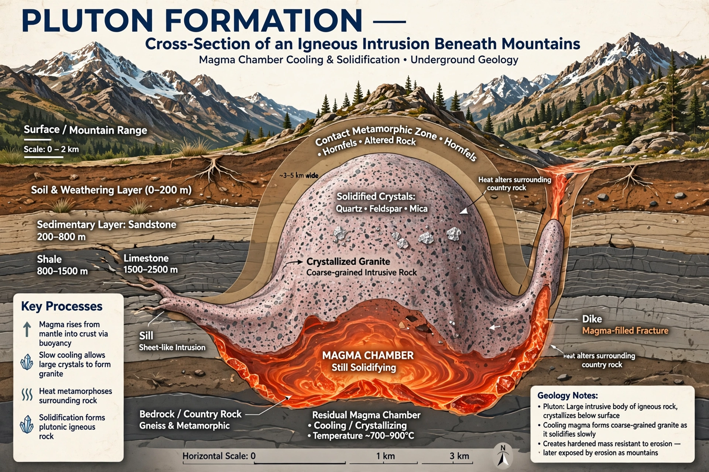

In geology, a pluton is a body of intrusive igneous rock (a plutonic rock) that is crystallized from magma slowly cooling below the surface of the Earth. Plutons include batholiths, stocks, dikes, sills, laccoliths and lopoliths.
| Pluton | |
|---|---|
 | |
| Type | Intrusive igneous body |
Magma rises, stalls in the crust and cools over thousands to millions of years, forming coarse-grained rock such as granite. Erosion may later expose the pluton.
Batholiths exceed 100 km²; stocks are smaller. Concordant plutons follow bedding (sills, laccoliths), discordant cut across it (dikes, batholiths).